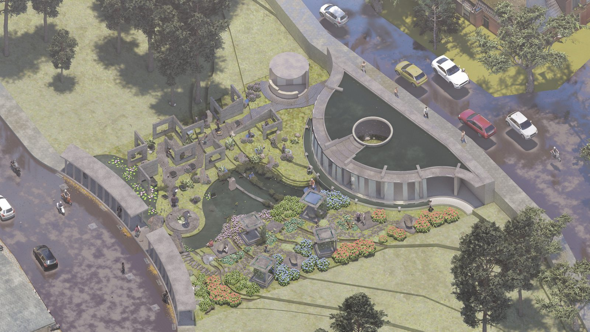

DISCO 6th 2023, Sekolah Vokasi UNDIP, "Public Healing Space to Deal with Burnout Conditions" · Tim Pukaja, entry SA030
A public garden for people dealing with burnout, on a site of about 1,000 m² on Jalan Dago, Bandung. Its neighbours are polytechnic campuses, dormitories, boarding houses and offices. The design combines a waterscape, pathways and four pavilions.

Aerial view from Jalan Dago
±1,000 m²site on Jalan Dago, Bandung
4pavilions
3design strategies
Harapan 1DISCO 6th, April 2023
The garden
Zoning and access, then a waterscape and pathway system.
Four pavilions: Reflection Stone, The Bliss Around, Re-Fra(me) and Kontemplasi, plus a Tree of Hope.
Therapeutic softscape alongside the hardscape, and a water system.
Recognition
Juara Harapan 1 (honourable 4th place), DISCO 6th, Sekolah Vokasi Universitas Diponegoro, April 2023.